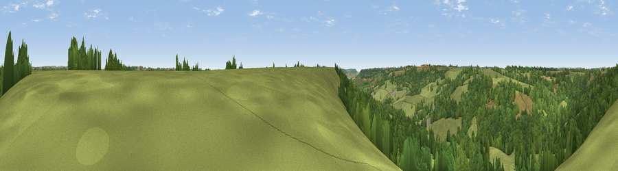

Viewpoint near Luppitt
#34704 in England · top 79% of its area beats it · near LuppittThe view, rendered

A 360° render of this exact spot computed from the terrain model, tree cover and land cover — summer colours, afternoon light, calibrated against photographs of famous viewpoints. Real trees, hedges and buildings will differ in detail.
The panorama
Grey silhouette: terrain skyline in each direction (720 bearings, Earth curvature and refraction included). Dashed green: skyline with trees (+15 m) and buildings (+8 m) as obstacles. Blue strip: how far the ground is visible on each bearing.
Where the view opens
Wedge length = distance to the farthest visible ground on that bearing (vegetation-aware). Rings at 10, 25 and 50 km.
What fills the view
55% grassland · 43% woodland · 1% cropland
Angular shares of the visible panorama (visual magnitude), not map area. Landscape diversity 0.33 (0–1 Shannon).
Key numbers
More beautiful places nearby
The staircase of upgrades: each row has a higher view potential than everything closer. Driving times are estimates from straight-line distance, calibrated against real road routing — check an actual route before setting out.
| Place | Direction | Drive | Score |
|---|---|---|---|
| Viewpoint near Luppitt | S · 0 km | ~1 min | 45.7 |
| Viewpoint near Beacon | S · 3 km | ~7 min | 63.1 |
| Viewpoint near Yarcombe | E · 5 km | ~11 min | 63.3 |
| Hembury | WSW · 8 km | ~16 min | 75.9 |
| Viewpoint near Pitminster | N · 10 km | ~20 min | 77.3 |
| Viewpoint near Tipton St John | SSW · 17 km | ~30 min | 81.5 |
| Viewpoint near Axmouth | SSE · 20 km | ~34 min | 82.4 |
| Viewpoint near Sidmouth | SSW · 21 km | ~36 min | 83.0 |
50.85556, -3.16527 · source: screening · position refined by local search. Computed location — check access rights before visiting.